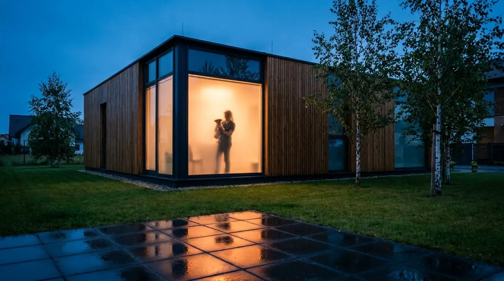
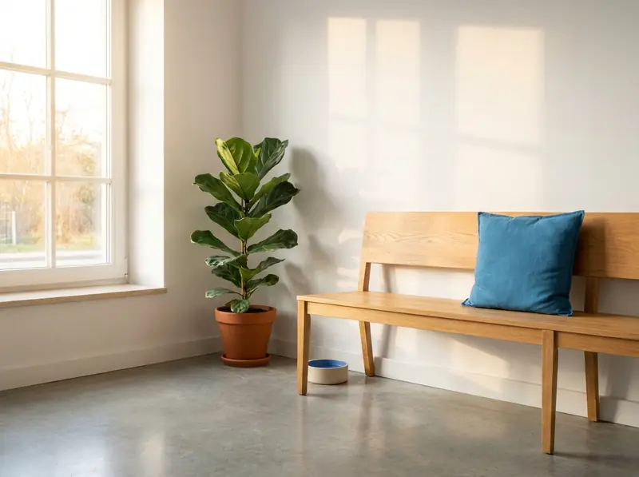
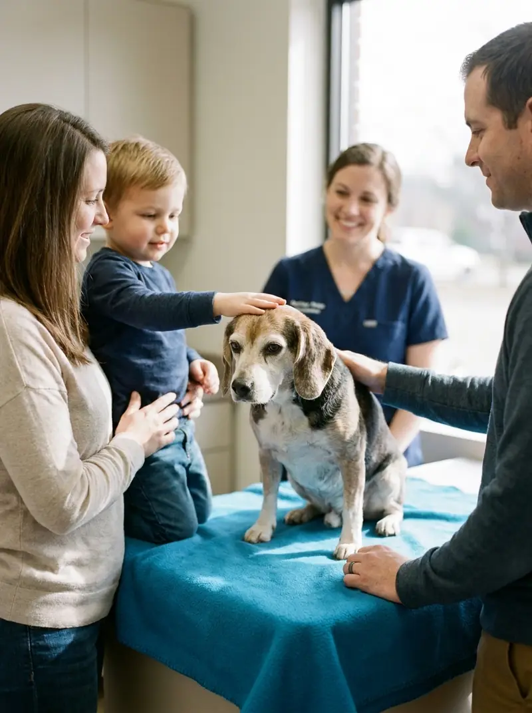
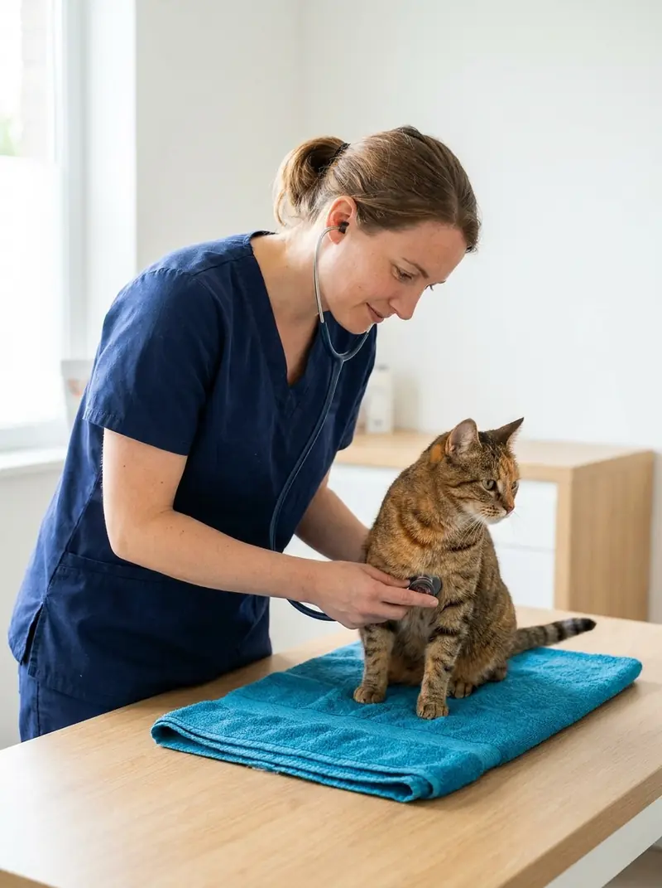
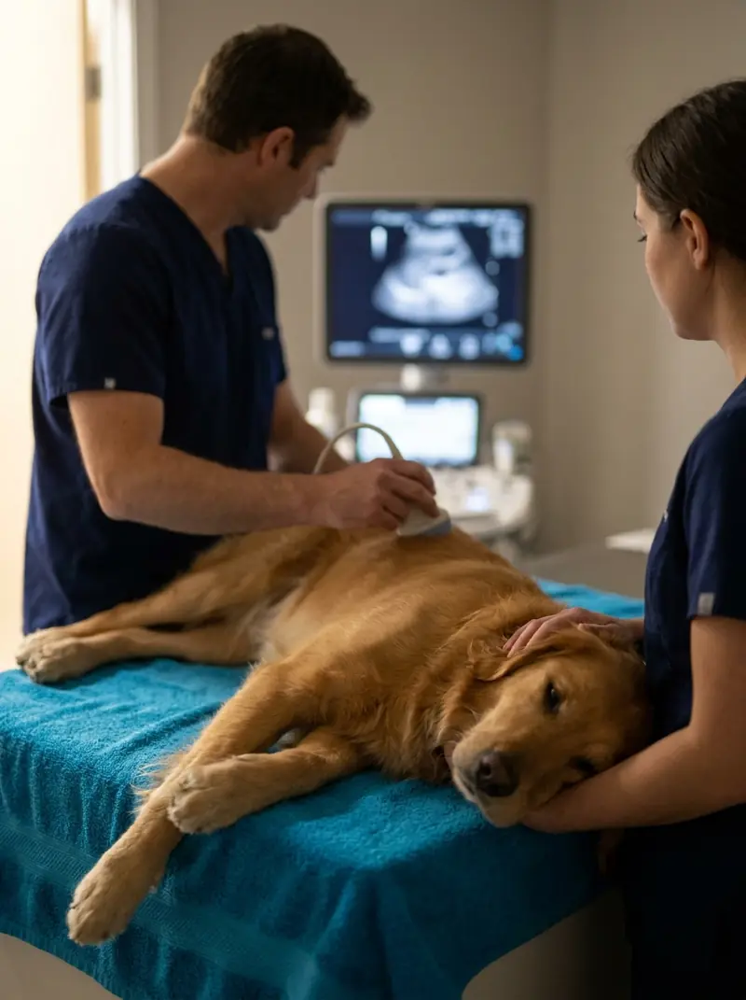
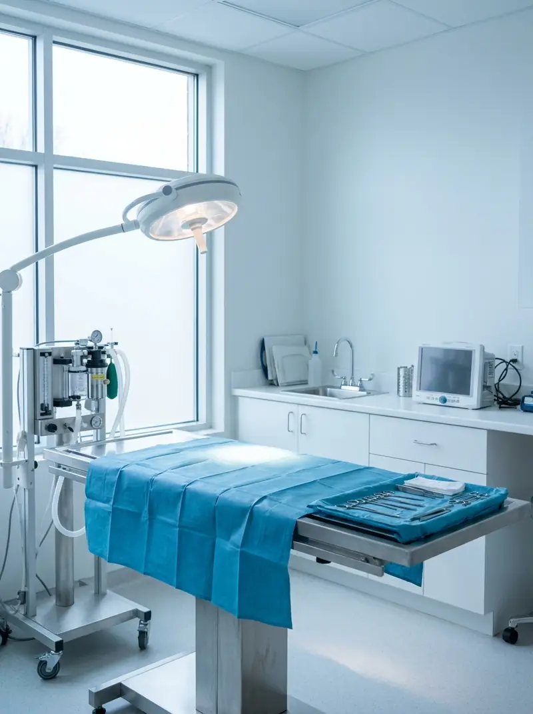
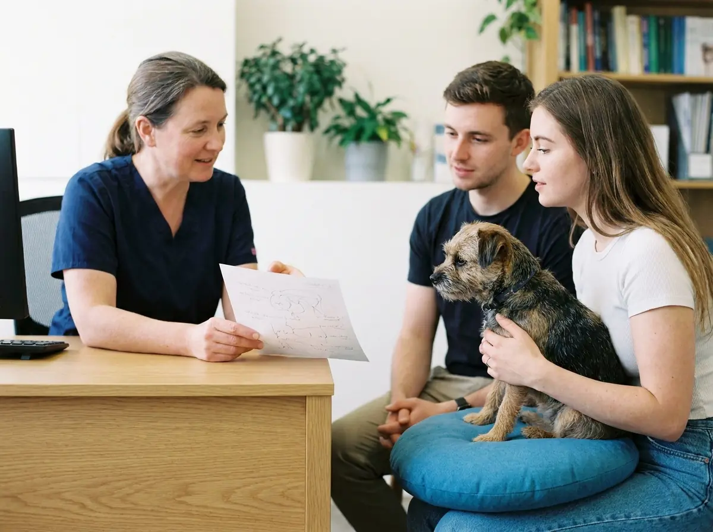

Przychodnia jest teraz zamknięta, działa dyżur nocny.
Dobry wieczór. Jeśli coś niepokoi Cię u zwierzęcia, zadzwoń.
Lekarz odbierze i powie, czy trzeba przyjechać od razu, czy wystarczy poczekać do rana.
Telefon dyżurny 536 041 341 Dotknij, żeby zadzwonić- 1Zadzwoń, zanim wyjedzieszPowiedz, co się stało, od kiedy i ile waży zwierzę.
- 2Przygotuj zwierzę do drogiKot w transporterze, pies na smyczy. Weź opakowanie po tym, co zjadło.
- 3Przyjedź na Azaliową 1aMiłoszyce, os. Przylesie. Wyznacz trasę
Dzwoń od razu, jeśli zwierzę:
- ma trudności z oddychaniem albo sine dziąsła
- mocno krwawi lub zostało potrącone
- ma drgawki, traci przytomność, nie może wstać
- zjadło trutkę, leki, czekoladę, ksylitol lub coś ostrego
- (pies) ma twardy, wzdęty brzuch i bezskutecznie próbuje wymiotować
- (kot) nie oddaje moczu albo długo siedzi w kuwecie bez efektu
- przegrzało się, ciężko dyszy i jest osłabione
Sprawa nie jest pilna? Napisz zapytanie, odpowiemy w godzinach pracy.
Przychodnia weterynaryjna w Miłoszycach
Z miłości do zwierząt.O każdej porze.
Leczymy psy i koty z Miłoszyc i Jelcza-Laskowic. Badania, USG i zabiegi robimy na miejscu, a po zamknięciu odbieramy telefon dyżurny.
- ul. Azaliowa 1aos. Przylesie, Miłoszyce
- Pn–pt 10–18, sob 10–15poza tym dyżur pod telefonem
- 4,1 w Google266 opinii



O nas
Mała przychodnia na osiedlu Przylesie.
Przychodnię prowadzi lek. wet. Małgorzata Atanowska-Eskander. Znamy naszych pacjentów i ich opiekunów, często od wielu lat.
- Spokojnie i z sercemDajemy zwierzęciu czas, żeby się oswoiło, a Tobie czas na pytania.
- Diagnostyka na miejscuUSG i badania laboratoryjne robimy u nas, bez jeżdżenia do Wrocławia.
- Jasno o kosztachZanim zaczniemy leczenie, mówimy, co zrobimy i ile to mniej więcej kosztuje.
Usługi
Od szczepienia po zabieg, w jednym miejscu.

Profilaktyka i szczepienia
Szczepienia, odrobaczanie i coroczny przegląd zdrowia.
Więcej
Interna i diagnostyka
Gdy zwierzę źle je, kaszle, kuleje albo po prostu nie jest sobą.
Więcej
USG i laboratorium
Obraz i wyniki na miejscu, często tego samego dnia.
Więcej
Chirurgia, kastracja i sterylizacja
Przed zabiegiem omawiamy przebieg, opiekę po nim i koszt.
Więcej
Chip i paszport
Znakowanie i paszport, także przed wyjazdem za granicę.
Więcej
Dyżur nocny
Po godzinach, w niedziele i święta odbieramy telefon 536 041 341.
Co robić w nagłym przypadkuJak wygląda wizyta
Wiesz, co się dzieje, na każdym etapie.

- RozmowaMówisz przez telefon lub na miejscu, co się dzieje.
- BadanieSpokojnie, bez pośpiechu, z Tobą obok.
- Plan i kosztMówimy, co proponujemy i ile to kosztuje.
- LeczenieLeki, badania na miejscu albo zabieg.
- Opieka po wizycieGdy coś Cię zaniepokoi, dzwonisz pod ten sam numer.
Opinie
Co piszą o nas opiekunowie.
„Jest to jedna z nielicznych lecznic w naszym rejonie czynna 24/7, telefon zawsze odbierany, ratowali moje koty i pieska w nocy i w święta.”
„Pani Doktor, świetna - wie co robi, ma podejście do zwierząt i nawet o północy zmieniła opatrunek dla mojego psa…”
„Pani doktor z sercem. Bardzo dobrze zaopiekowała się naszą kotką. Jak na nocną opiekę cena była przystępna.”
Po godzinach
Coś się dzieje wieczorem? Odbieramy.
Po 18:00, w niedziele i święta działa dyżur pod telefonem. Zobacz, kiedy dzwonić od razu i co zrobić przed przyjazdem.
Kontakt
Zapraszamy na Azaliową 1a.
- Telefon (także dyżur)536 041 341
- Adresul. Azaliowa 1a (os. Przylesie), 55-220 Miłoszyce
Wyznacz trasę - GodzinyPn–pt 10:00–18:00, sob 10:00–15:00
Pozostałe godziny i niedziele: dyżur pod telefonem - E-maileskanderwet@gmail.com
Dojazd
ul. Azaliowa 1a os. Przylesie, 55-220 MiłoszycePn–pt 10–18, sob 10–15